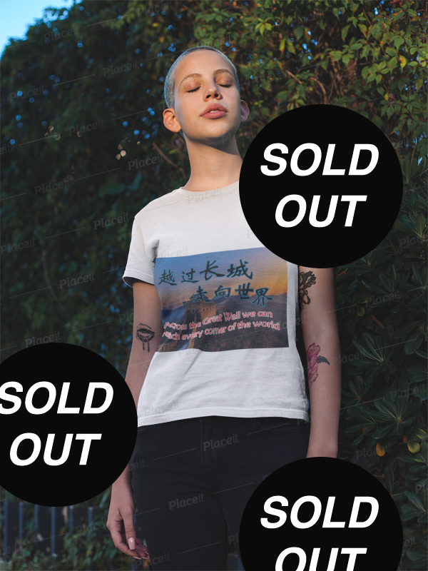
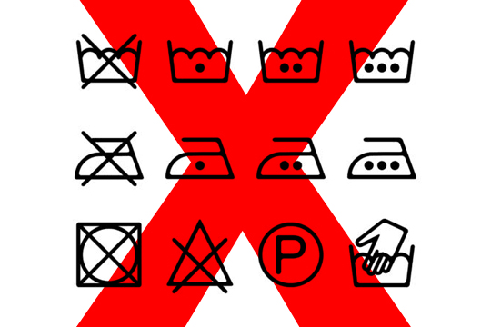
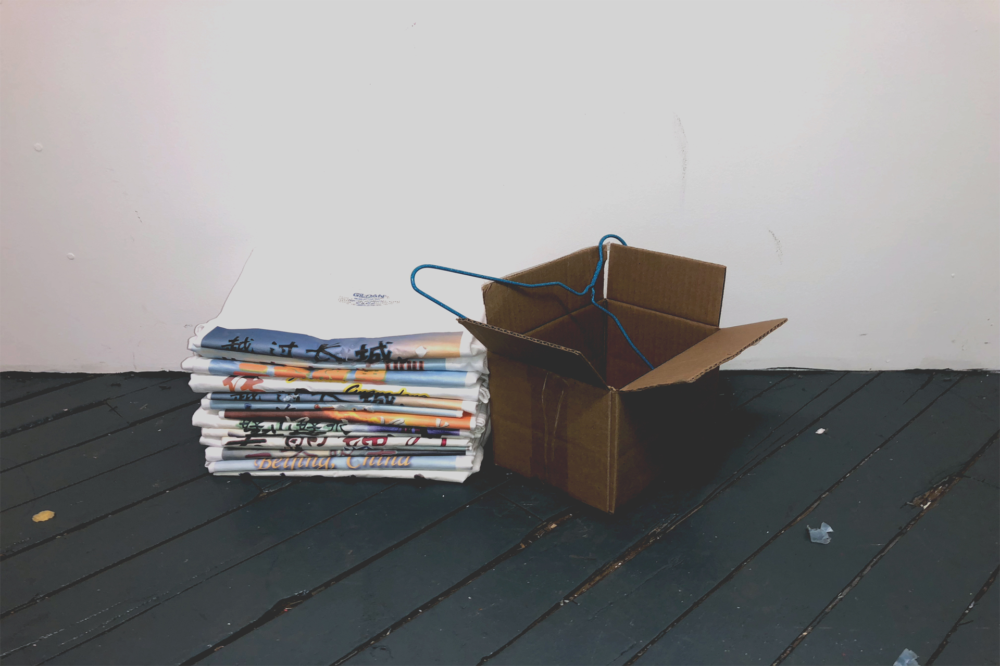
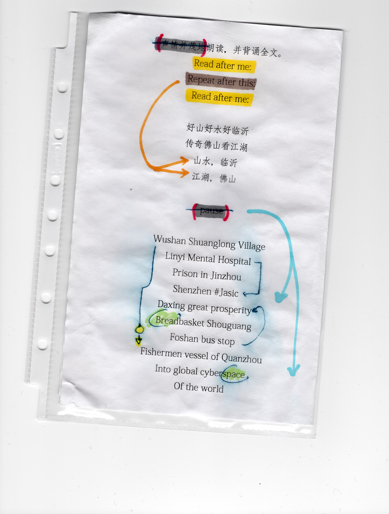
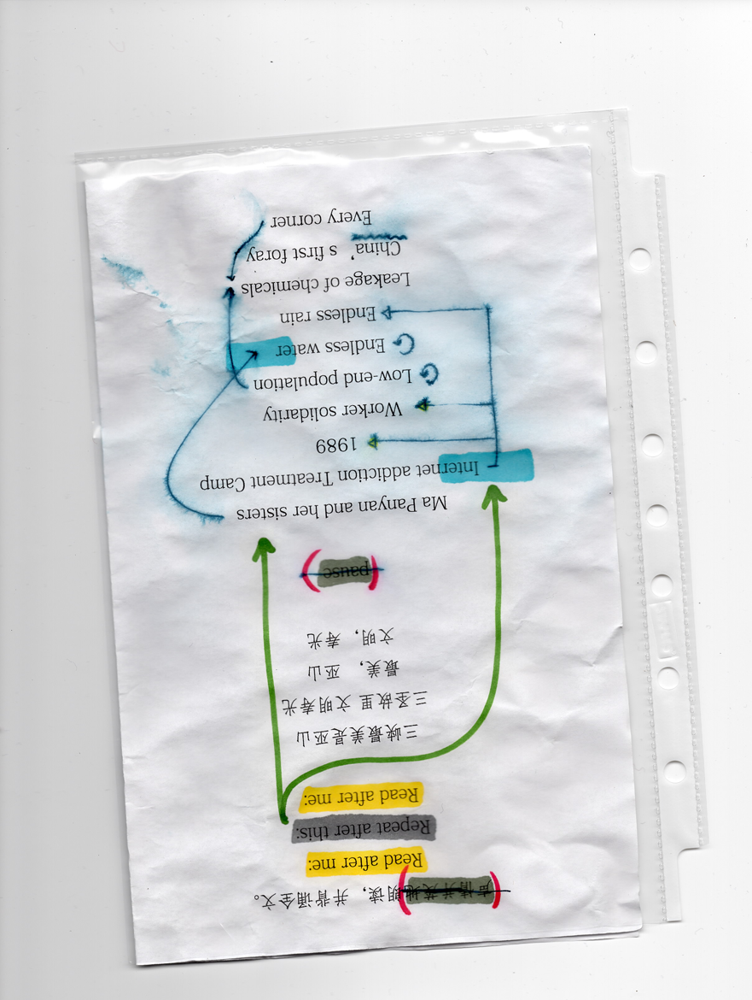
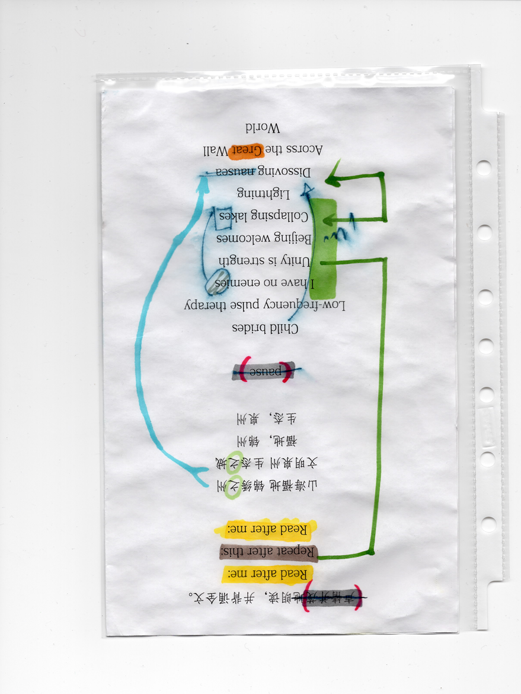
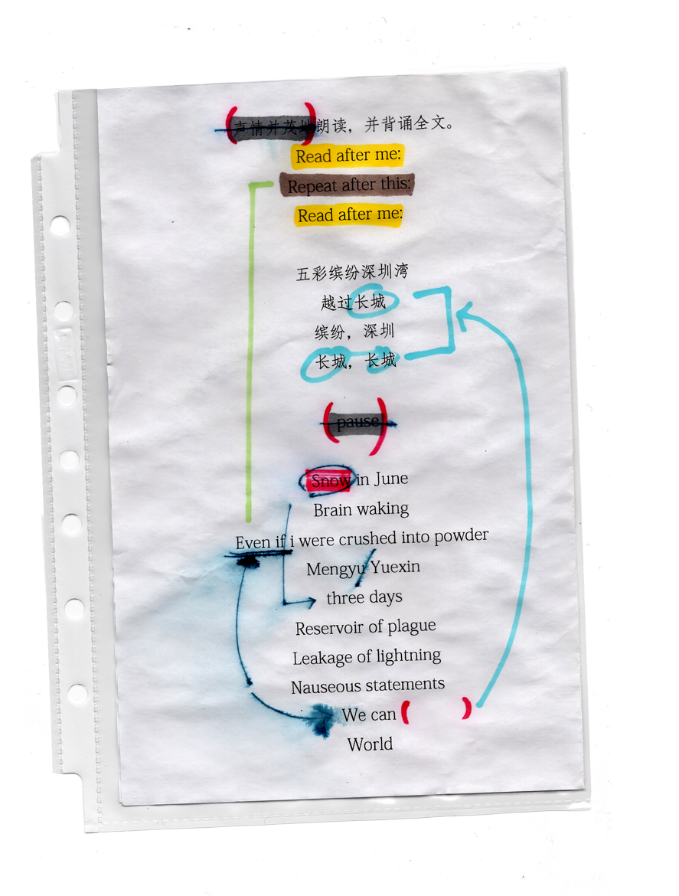
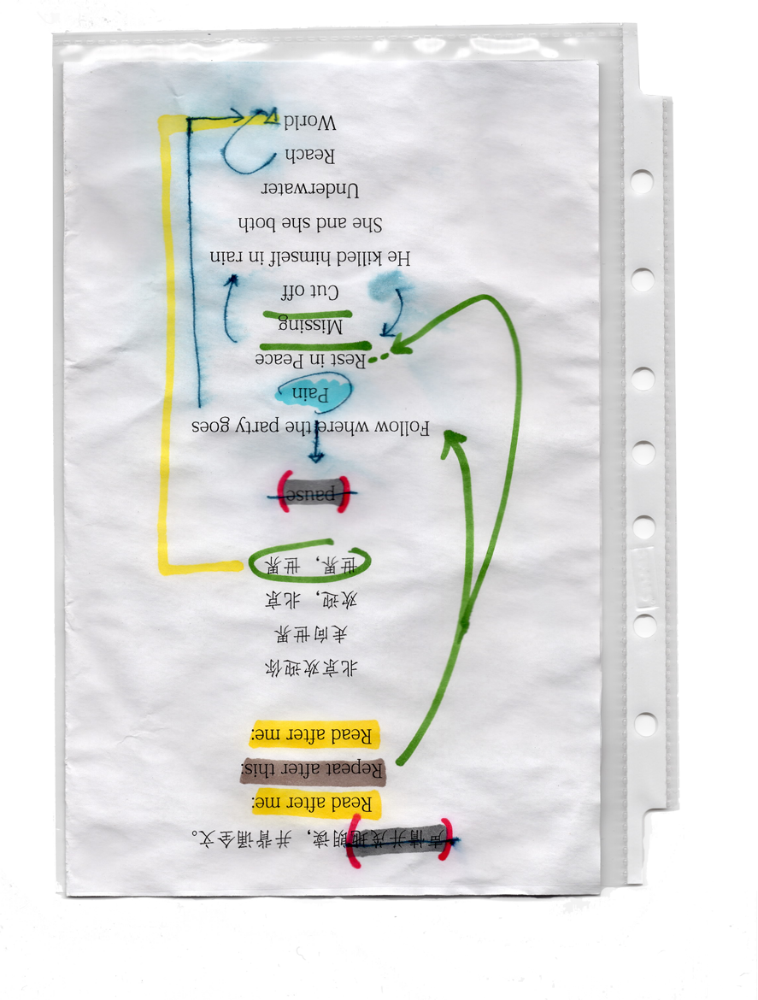

As of Nov 18, 2018, this site is no longer updated. Our team at Zhongguo Souvenirs would like to thank you for your support throughout the journey. The site has decided to permenantly shut itself down on Oct 1st, 2019, 10:00AM (UTC+8), in celebration of People's Republic of China's 70th birthday. In the meantime, you are still welcome to browse our archive.
X
The current development of the site is not adapted for mobile. Please view it on a PC or tablet.
Zhongguo Souvenir was founded in October, 2017, by a certain S. Xu, somewhere up in the Hudson Valley. We as a brand opts for a more obscure pinyin "Zhongguo," instead of "China," in order to "invoke and recall a place, unreachable, a place as a souvenir, a souvenir for self-identified exiles like me..." (as Xu told a local literary gazette, Jan 2018). We specialize in tourist souvenir-inspired T-Shirts, each uniquely designed print representing a destination in China.
Eight designs ("Great Wall" design temporarily out of stock) are available for purchase, please see #SHOP section for details. You can read more about the stories behind the T-shirts in #STORIES, find additional visuals in #AcrossTheWall, learn about souvenir cares in #CARE.
If you have any questions, or would like to submit a design(yes - we accept submissions!), please find our contact info in #CONTACT.
#SHOP
nbsp;#SHOP
style="color:white"#SHOP

QUANTITY:
Our most popular design, "Changcheng 长城" has currently sold out - we are trying our best to restock. If you are interested in receiving updates, please email info@greatsouvenirs.cn with subject line: "changcheng" to sign up. Thanks
#CARE
nbsp;#CARE
#CARE
#CARE


#CARE is important - each of our t-shirts was meticulously designed and hand-made. It is important for us to make sure that you understand its importance !importance importance. To take care of the product is to preserve our memories your memories memories < ;/ souvenirs are memories. Please see below the video for laundry instructions nothing is permitted but everything is allowed ;;
nbsp;#ABOUT
Eight designs ("Great Wall" design temporarily out of stock) are available for purchase, please see #SHOP section for details. You can read more about the stories behind the T-shirts in #STORIES, find additional visuals in #AcrossTheWall, learn about souvenir cares in #CARE.
If you have any questions, or would like to submit a design(yes - we accept submissions!), please find out contact info in #CONTACT.
#ABOUT&
nbsp;#ABOUT
#STORIES
#Stories





China's first foray into global cyberspace was an email sent on 20 September 1987 to University of Karlsruhe. It said "Across the Great Wall, we can reach every corner in the world". This has since become a well-known phrase in China, and is displayed on the desktop login screen for QQ mail. As of 2018, websites blocked in mainland China include: Google, Facebook, YouTube, Chinese Wikipedia, Twitter, Blogspot, Instagram, FC2, Pinterest, Pornhub, Dropbox, Vimeo, Archive.org, WikiLeaks, and many more.
h2>好山好水 沂 沂 来In 2008, the Chinese prisoner became the first country to diagnose clinical conditions. The Internet in the city of Shandong Province, the online drug center, camping, Linyi Psychiatric Hospital, and especially young people, became more popular with their parents since it was said that it is now their dependence on children and computer games on the Internet.According to the media, the hospital costs $ 5,500 per month for the production and use of drugs to the head physician of Yang Yongxin and says in the brain "xingnao" (Chinese, especially the computer). In the first genital tract of the Chinese Ministry of Health, Yang has a tradition of more than 3000 children. Following the prohibition, Yang's other treatment, the form, hereinafter referred to as "low frequency transmission," suggested that the floor was painful than the object. From 2016, the number of children continues to be used
h2>#CARE is important - each of our t-shirts was meticulously designed and hand-made. It is important for us to make sure that you understand its importance !importance importance. To take care of the product is to preserve our memories your memories memories < ;/ souvenirs are memories. Please see below the video for laundry instructions nothing is permitted but everything is allowed ;;
h2>#CARE is important - each of our t-shirts was meticulously designed and hand-made. It is important for us to make sure that you understand its importance !importance importance. To take care of the product is to preserve our memories your memories memories < ;/ souvenirs are memories. Please see below the video for laundry instructions nothing is permitted but everything is allowed ;;
h2>#CARE is important - each of our t-shirts was meticulously designed and hand-made. It is important for us to make sure that you understand its importance !importance importance. To take care of the product is to preserve our memories your memories memories < ;/ souvenirs are memories. Please see below the video for laundry instructions nothing is permitted but everything is allowed ;;
h2>#CARE is important - each of our t-shirts was meticulously designed and hand-made. It is important for us to make sure that you understand its importance !importance importance. To take care of the product is to preserve our memories your memories memories < ;/ souvenirs are memories. Please see below the video for laundry instructions nothing is permitted but everything is allowed ;;
h2>#CARE is important - each of our t-shirts was meticulously designed and hand-made. It is important for us to make sure that you understand its importance !importance importance. To take care of the product is to preserve our memories your memories memories < ;/ souvenirs are memories. Please see below the video for laundry instructions nothing is permitted but everything is allowed ;;h2>#CARE is important - each of our t-shirts was meticulously designed and hand-made. It is important for us to make sure that you understand its importance !importance importance. To take care of the product is to preserve our memories your memories memories < ;/ souvenirs are memories. Please see below the video for laundry instructions nothing is permitted but everything is allowed ;;